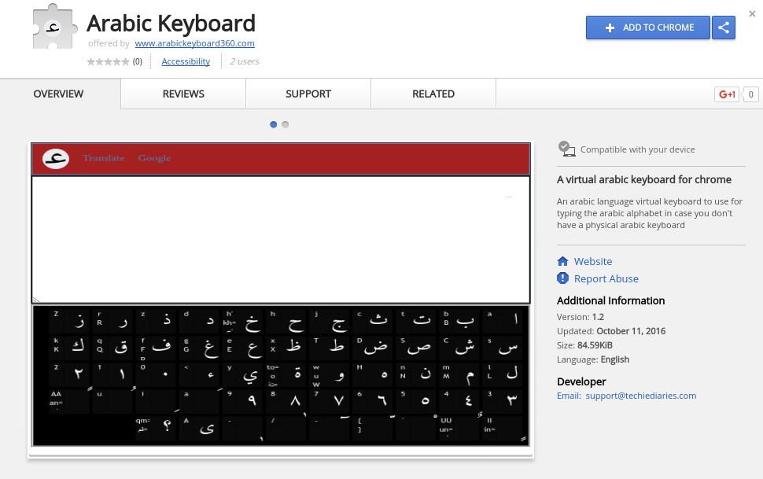
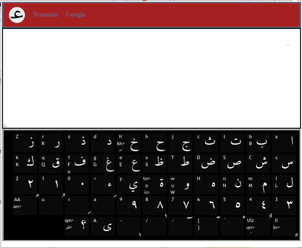

Le clavier arabe 360 est un clavier virtuel qui vous permet d'écrire en langue arabe si vous disposez pas d'un clavier physique avec les touches des lettres arabes .Il l'utilise ce qu'on appelle un systéme de translitération ou de romanization pour convertir ou bien translitérer ou encore romanizer la langue arabe qui veut dire tout simpelement écrire les lettres arabes avec les lettres latins ( Anglais,Français etc.). Plusieurs systémes de translitération d'Arabe en latin existent comme par exemple ArabTex ,ils sont utilisés pour différents besoin comme la recherche scientifique,la communication en ligne avec le tchat et les autres services de communication,ils sont aussi utilisés par les arabes dans les pays arabes (anglophones et francophones) et les gents qui se trouvent dans les pays non arabes pour écrire car le majorité d'eux ne possédent pas un clavier arabe physique. Le clavier arabe 360 a conçue pour vous un systémé de translitération qui contient toutes les lettres arabes et qui peuvent étre entrées en utilisant les lettres équivalentes en latin les plus proches phonétiquement.
comment utiliser le claver arabe ?
Pour utiliser cet outil virtuel ils vous suffit de visiter ce site web ( ce qui est évedemment fait si vous lisez ce texte ) et aprés vous avez deux choix/options qui sont :
Vous pouvez utilisez votre sourie pour cliker diretement sur les touches arabes qui extistent dans le clavier (claver) virtuel mais ça consume beaucoup du temps et ce n'est pas praticable dans tous les cas surtout quand vous voulez écrire des textes qui sont longues.
Vous pouvez aussi utiliser le votre clavier physique attaché à votre ordinateur pour saisir les lettres arabes ,vous écrivez bien sur en lettres latines mais ne vous inquittez pas notre claver/systéme va prendre la charge de convertir, en temps réel et sans que vous prenez l'attention,tout ce qui saisi en Arabe en utilisant ce qu'on mentionné auparavant,c'est à dire la translitération.
Quelles sont les maniéres d'utilisation de clavier arabe
Comment utiliser l'extension Chrome du clavier arabe
Pour utiliser l'extension de clavier arabe pour Chrome il vous suffit de suivre ces étapes : Premiérement,vous devez aller au Chrome Extension Store ou notre extension existe depuis ce lien et l'instatller .Le téléchargement et l'installation se fait automatiquement par Chrome aprés avoir cliké sur le button "Ajouter à Chrome" 
Ensuite vous pouvez l'utiliser normalement comment n'importe quelle extension de Chrome  Voila un vidéo qui vous montre comment télécharger,installer et utiliser l'extension du clavier arabe en Chrome
Comment utiliser l'extension Firefox du clavier arabe
C'est presque la méme méthode ,vous allez d'abords au site de Mozilla ou vous pouvez ajouter l'extension ,ensuite vous l'ajouter depuis le button d'ajout ,Firefox va demander de répondre à quelque questions et voila c'est installé ,vous pouvez maintenant utiliser le clavier arabe quand vous voulez sans avoir besoin de version disponible en ligne. Pour savoir plus sur la procédure d'installation et d'ajout d'extension sous Firefox ou encors comment l'utiliser pour écrire en claver arabe vous pouvez regarder ce petit vidéo disponble depuis YouTube
Comment utiliser l'extension Opera du clavier arabe
Pour pouvoir utiliser la version d'extension destinée pour l'explorateur du web populaire Opera vous suivez presque les mémess étapes D'abrods vous commencez par l'étape de l'installation aprés avoir visité le site web d'Opera ou vous téléchargez l'extension depuis ce lien. Pour plus d'information vous pouvez regarder ce vidéo
Le clavier arabe 360 est un outil en ligne qui vous aide à écrire en caractéres arabes si vous ne disposez pas d'un clavier physique avec les caractéres du langage arabe